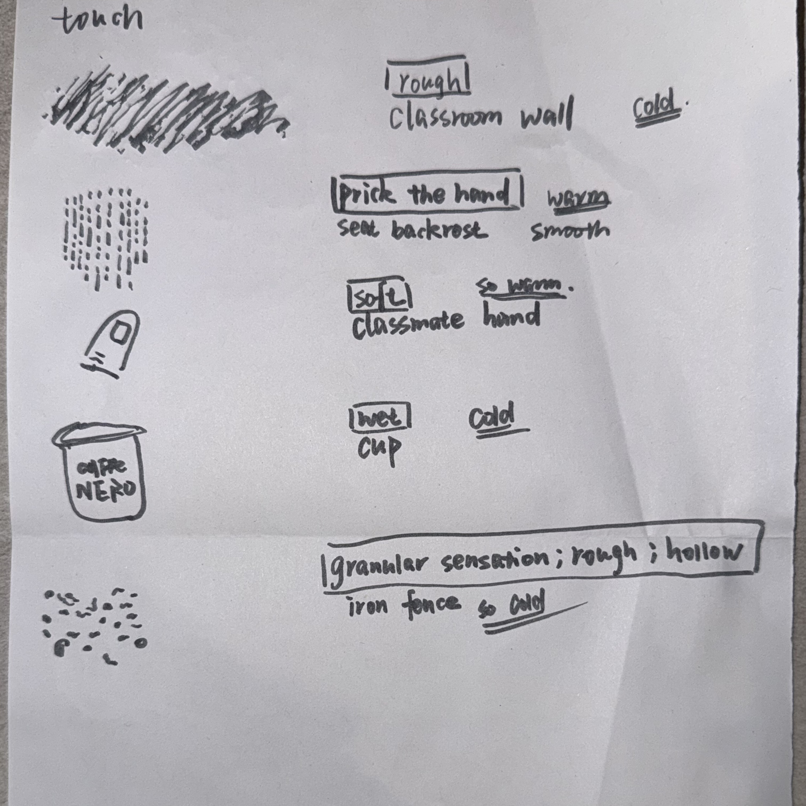
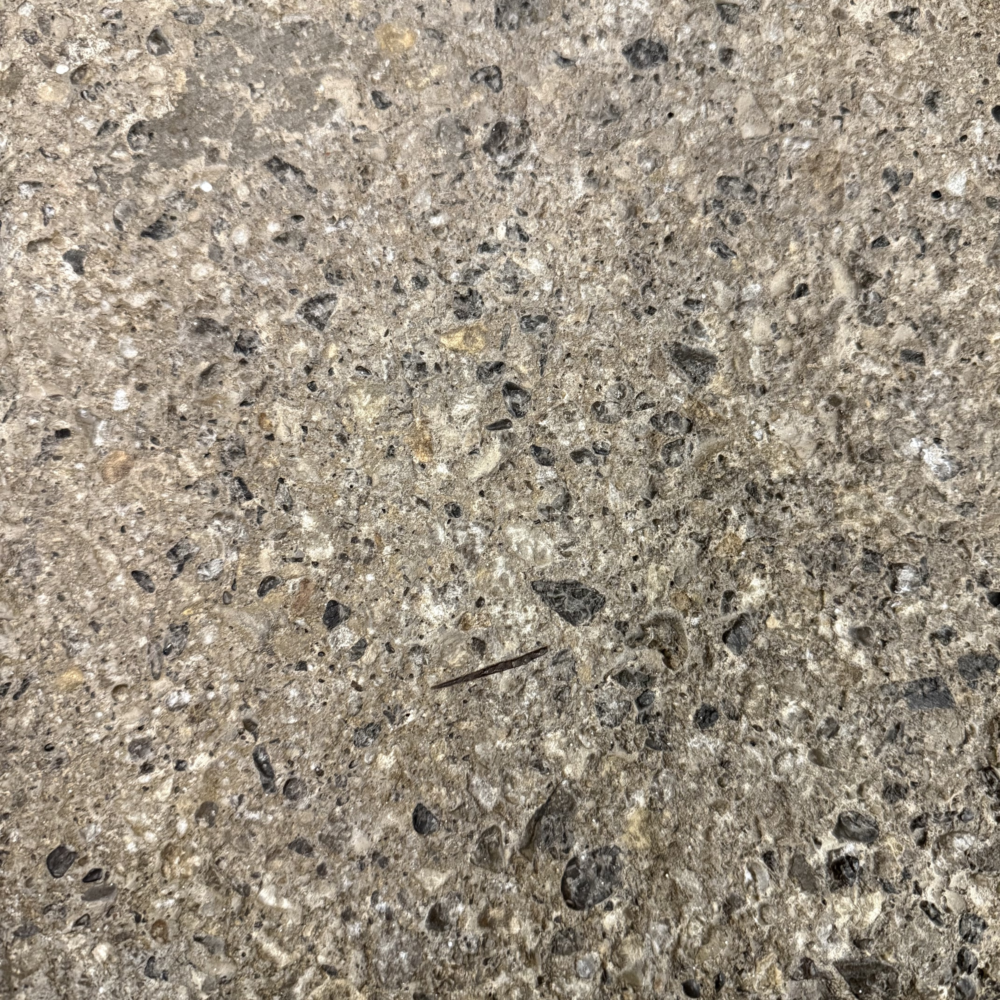
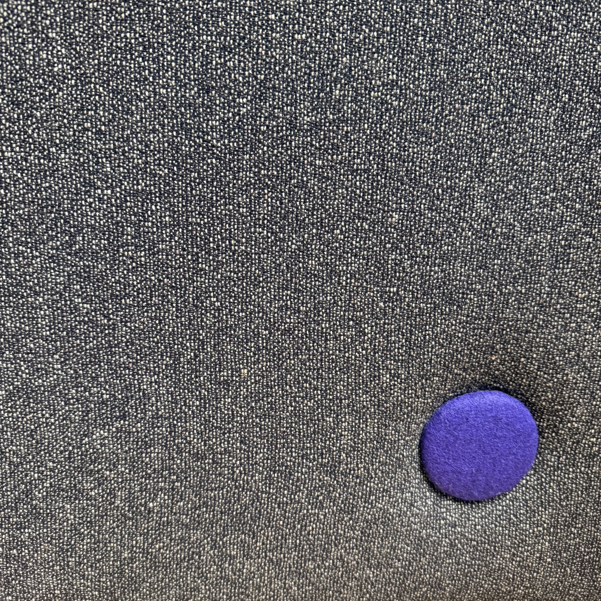
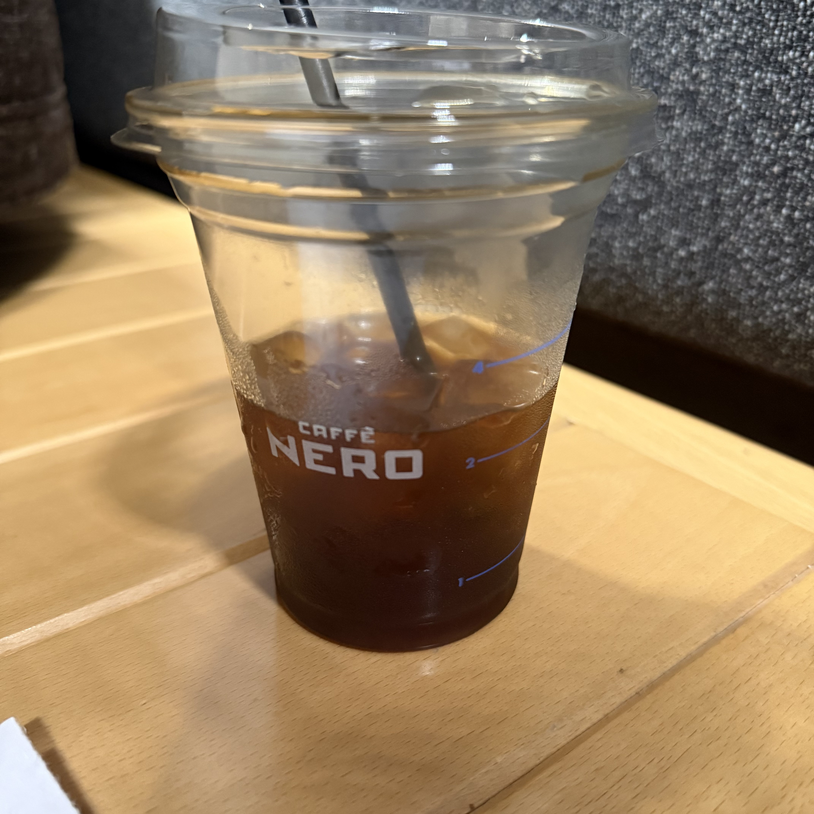
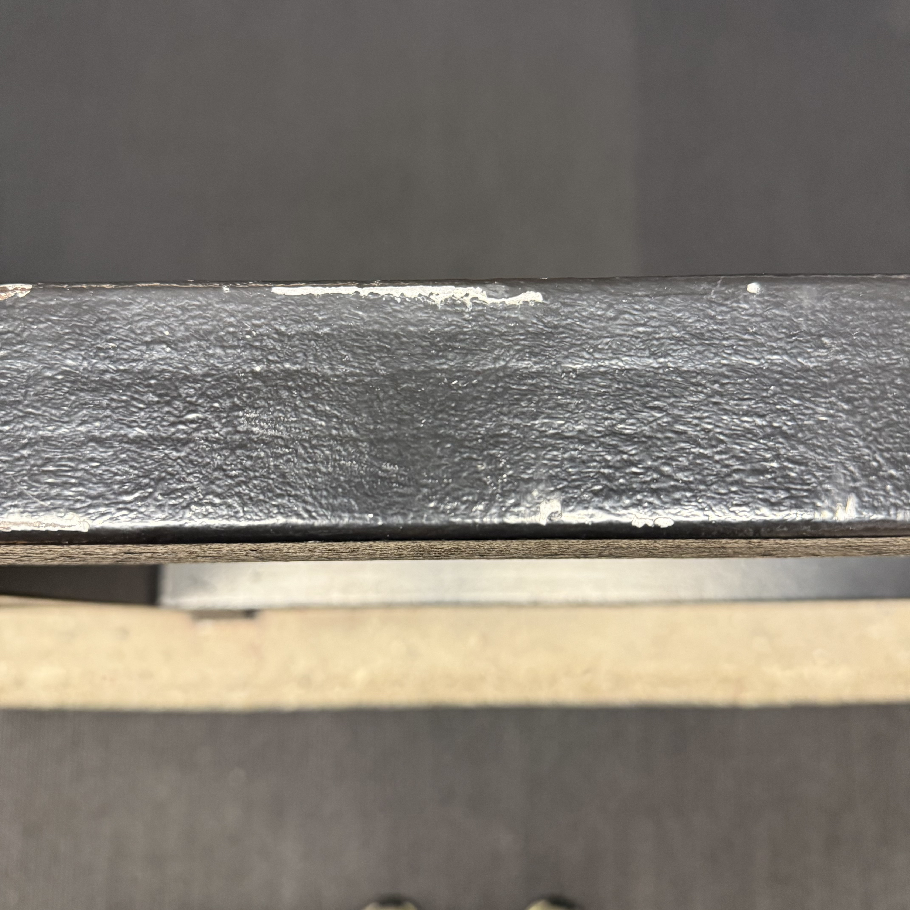
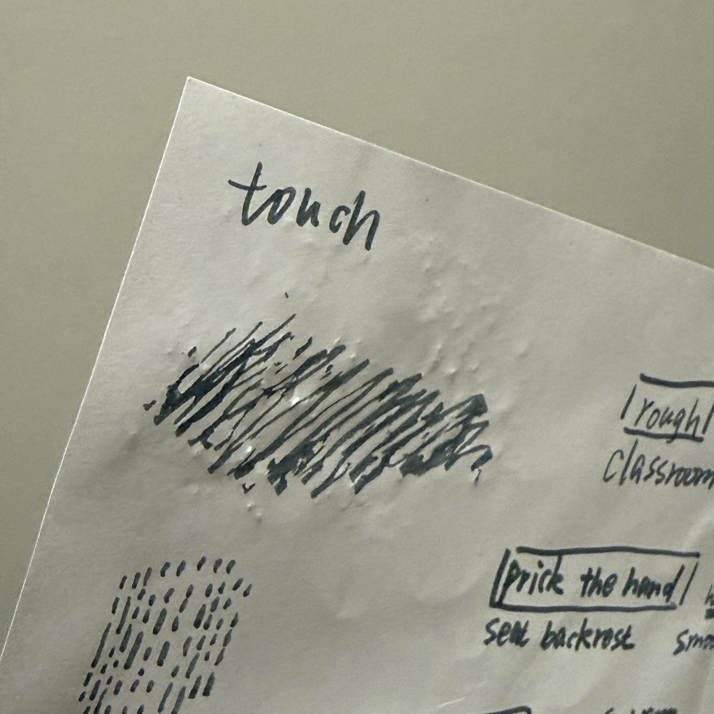

Week 8 · Digital Ecologies and Practices
What I did in the workshop
Five encounters, one sense: touch.
I really enjoyed this workshop because it encouraged me to explore the building through my senses rather than simply move through it. I chose touch and recorded five encounters: the wall outside the classroom, a seat back, a classmate's finger, a coffee cup and a metal railing. I photographed four of them and recorded all five through drawings and short notes.


Rough · Cold

Prickly · Warm

Wet · Cold

Granular · Rough · Cold
Soft and warm. I recorded this encounter through a drawing and words, without taking a photograph.

A texture I could take home
For the wall, seat back and metal railing, I drew marks based on their textures rather than trying to draw the whole object. The wall was especially interesting. I pressed the paper against it, and its uneven surface left a rough, raised texture on the sheet.
This meant that my record was more than a picture. Even after taking the paper home, I could feel its surface and remember what touching the wall had been like.
The paper became a small reminder of a place I had touched.
My reflection
What I liked most was how the activity changed my attention. A wall or a chair would normally be part of the background. When I deliberately touched them, I began to notice differences in temperature, texture and how they felt against my skin. I did not need to visit an unfamiliar place to notice something new.
Touch also made me think about distance. I can look at a wall from across a room, but touching it requires me to move close enough to make contact. The activity made my relationship with the building feel more immediate. Although I stayed inside, it raised questions for me about how I encounter other environments, including places I think of as “nature”.
Recording the experience showed me that different methods preserve different things. The photographs show colours and visible patterns, while my notes record sensations such as warmth or coldness. The paper pressed against the wall preserves another kind of trace: an uneven surface that I can still touch. None of these records captures the entire experience.
Putting the activity on this website adds another change. Visitors can see my photographs and drawings, but they cannot feel the raised paper through the screen. I can describe it, yet that description still depends on their imagination. This makes me more aware of what I keep, and what I lose, when I turn a physical experience into a digital record.
Readings and connections
These are the readings and listening materials set for this week. The questions below connect them to my touch journal and give me starting points for further reflection.
Digital Ecologies
Searle, A., Giraud, E.H., Turnbull, J. and Anderson-Elliot, H. (2024). Introduction: what is Digital Ecologies? In: Turnbull, J., Searle, A., Anderson-Elliot, H. and Giraud, E.H. (eds.). Digital Ecologies: Mediating More-Than-Human Worlds. Manchester: Manchester University Press, pp. 1–20.
My question for this reading is how to understand the relationship between the physical encounter, the paper record, the phone photograph and this webpage. What changes as my experience moves between these forms?
Find the book through the University LibraryThe Soundscape
Schafer, R.M. (1994). Introduction. The Soundscape: Our Sonic Environment and the Tuning of the World. Rochester, VT: Destiny Books.
I chose touch for the workshop. Alongside this reading, I would like to consider what a listening version of the same activity might reveal. Would I notice the same places and objects, or would sound lead my attention somewhere else?
Walking as Countermapping
WalkingLab. Walking as Countermapping. Podcast.
A question I want to explore alongside this podcast is what a map based on touch might include. Instead of only recording where objects are, I could record where I encountered warmth, roughness or moisture.
Open the podcast